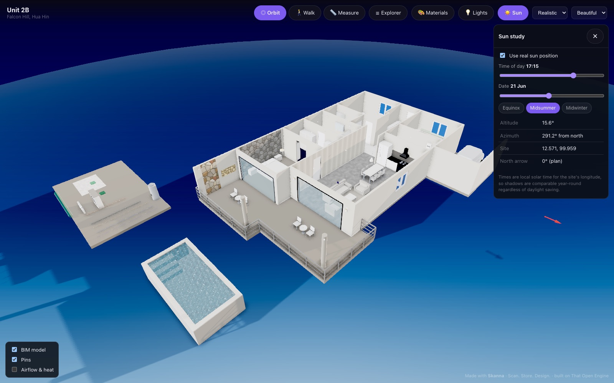
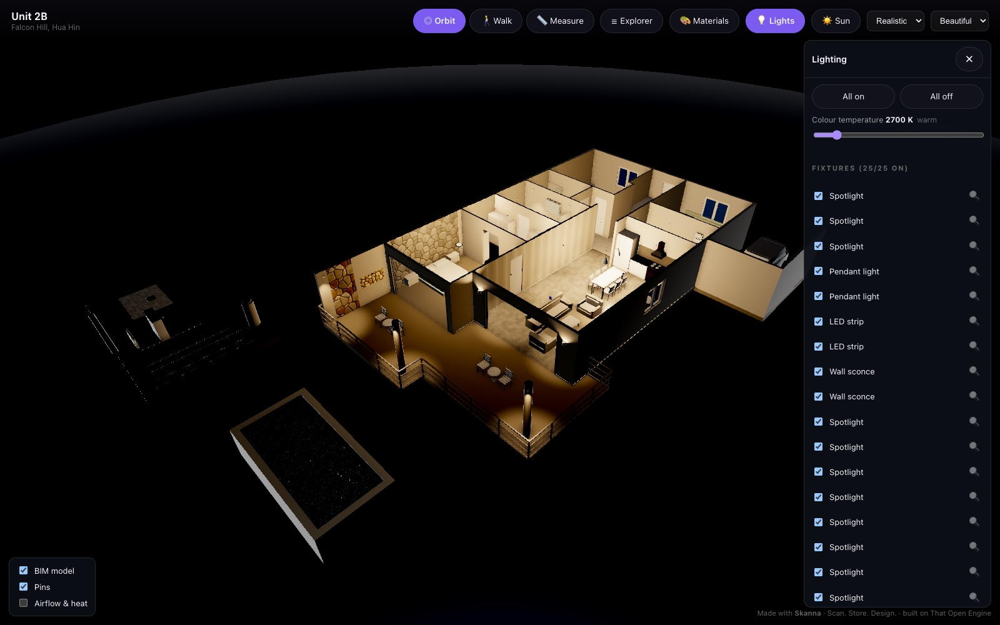
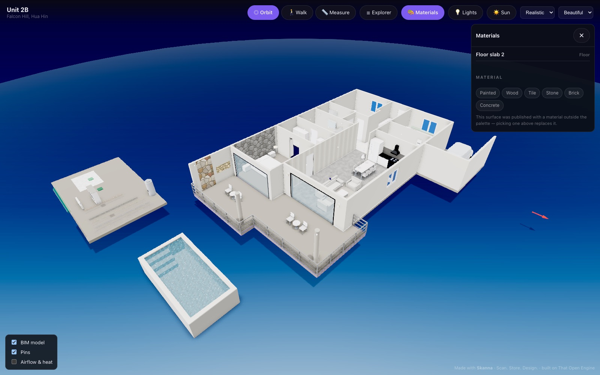
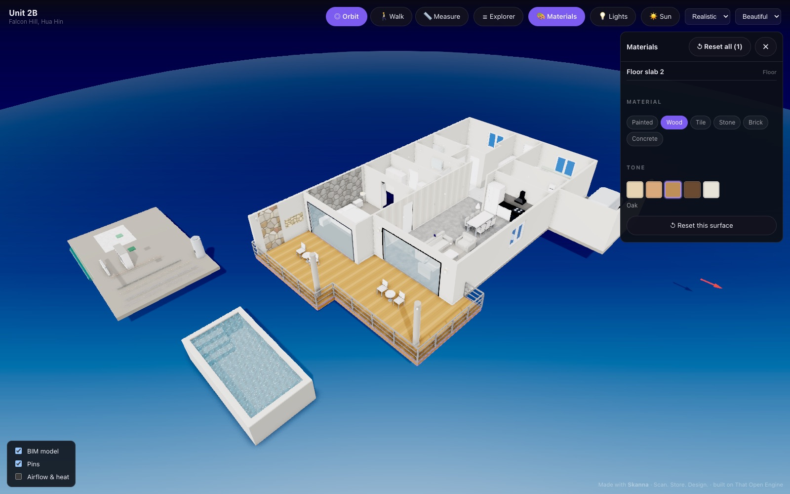
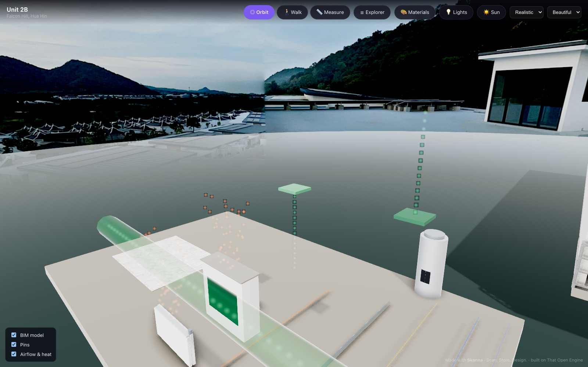
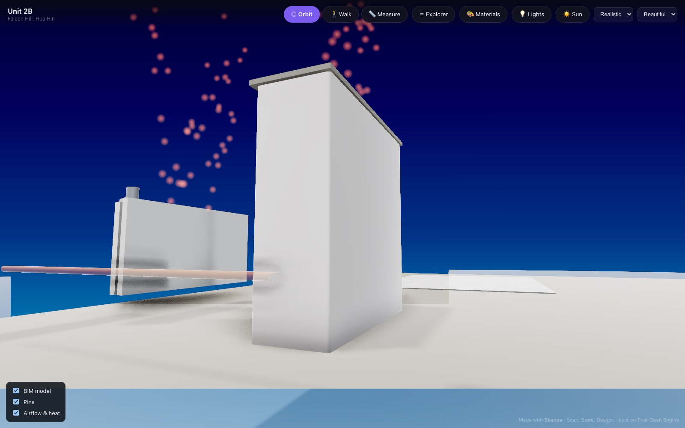
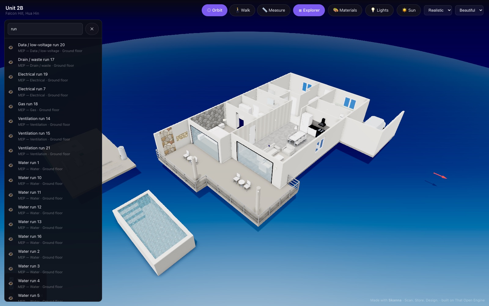
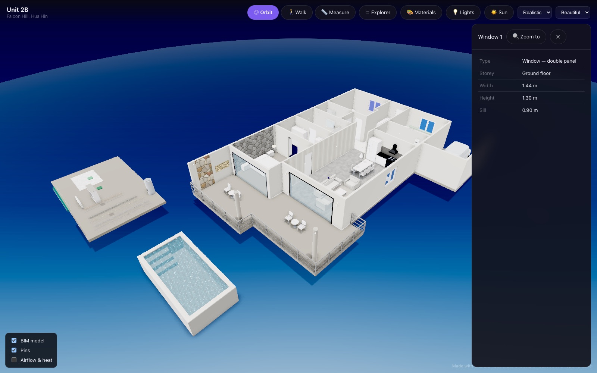

Everything your building needs.
Skanna is the first one-stop platform for buildings. Scan a property with your iPhone, turn the capture into a real IFC building model in your browser, and store, plan and design everything in one place.
Coming to the App Store — launching soonLiDAR scanner
A scanner made for properties, not for everything. Capture any space in minutes with just your iPhone or iPad Pro. Free to use.
BIM Author
Turn scans into real building models in your browser and export IFC, the open standard for structured building data. Learn it in a day.
Property portal
Host models, photos, panoramas and documents online in one property portal. Or export everything and run your own setup.
AI floor planning
AI-assisted floor planning and interior design built on actual, correct measurements from your scan.
Launching in the coming weeksFrom units ready for renovation to finished showpiece homes: one scan becomes the foundation of a complete digital twin — and your data is always yours to take with you.
The Skanna app
Skanna turns your iPhone or iPad Pro into a professional LiDAR scanner. Capture dimensionally accurate 3D models of any space in minutes, entirely on your device, entirely private.
LiDAR capture
Scan a space with your iPhone or iPad Pro and build a true-to-scale 3D mesh in real time, with live coverage feedback while you scan.
Instant 3D preview
Your model appears the moment you finish scanning. Processing to a clean white finish or full photo color happens afterwards, in no time.
Measure & annotate
Tap two points to measure distances. Drop numbered pins with notes, photos and panorama domes anywhere on the model.
Store & organize
Save scans, photos, 360° panoramas, and files per property, with a site log, comments and your whole site in one place.
Open exports
Export scans in GLB format, or your whole site as a ZIP bundle with models, photos, panoramas, and pins. Your data is never locked in.
Offline & private
Everything is captured, processed, and stored on your device. No account, no cloud, no tracking. Read the privacy policy.


Skanna Web — BIM Author & property portal
An easy-to-use BIM authoring tool that runs entirely in the browser. Trace your scan, build a real IFC model floor by floor, and skip the heavy CAD suite: for a large share of properties, Skanna does the job of SketchUp, Blender or Revit — and most people learn it in a day.
Export and build your own solution
Every scan exports as a standard GLB model and every building model as IFC, the ideal format for structured data about buildings. Use them in any tool or platform you like — no conversion, no lock-in.
Keep everything on the Skanna platform
Host your models and data online, work on them from any browser, and share with anyone. If you ever decide to leave, you take all of your data with you.
- 3D viewer — orbit, pan, zoom, and dollhouse view of your scans, right in the browser
- Pins & collaboration — numbered pins on the model with notes, replies, and photos
- Measure — real-world distances on the web model, just like in the app
- 360° panoramas — captured panoramas open in a full spherical viewer, linked to the model
- CAD & IFC viewing — open IFC files alongside or overlaid on your scan
- BIM Author — trace your scan in a 2D plan editor and export a real IFC building model, floor by floor
- Drawings — plans, elevations and sections generated onto a title block, exported as PDF, SVG or DXF
- Shared digital twin — publish the finished model to a link with sun study, lighting, restyling and building services


From scan to building model: export the finished IFC and open it in SketchUp, Revit, Blender, or your web CAD platform of choice — to plan, design, and extract data — or keep it on the Skanna platform for further development.
Permit drawings, straight from the model
The model also produces the paper deliverable. Plans, elevations and sections are generated onto a real title block with dimensions, grid bubbles, room schedules and a legend — then exported as PDF, SVG or DXF at any standard scale.


The shared digital twin
When the model is finished, publish it to a link. Anyone you send it to opens a fully rendered building in their browser — no software, no account, no download. They can orbit it, walk through it, click anything for its data, measure it, and see how it behaves through the day.

Sun study
Real solar geometry for the building's own coordinates. Move the time of day and the date and the shadows follow — so a buyer can see which rooms get the morning light and where the terrace is shaded in the afternoon.


Lighting
Every light fixture in the model is a real emitter. Switch them on individually or all at once, set the colour temperature, and see the building after dark.

Materials and colours
Click any wall, floor or ceiling and restyle it — paint, wood, tile, stone, brick or concrete. Changes belong to whoever is viewing; the published model is never touched.


Building services
Ventilation, electrical, water, drainage, gas and data runs are real objects in the model, each one selectable and listed by discipline. Turn on airflow and heat to see, indicatively, where air moves and what warms a room.



Walk it, measure it, question it


The twin is a link, not an app. Send it to a buyer, a contractor or a lender and it opens on their phone or laptop exactly as you published it.
How pricing works
Start free, pay only when Skanna starts doing real work for you — at a fraction of the cost of a traditional CAD license.
Capture
The full scanner, free on the App Store.
- Unlimited scanning
- View, measure and annotate on device
- No account required, fully private
Export
A single one-time purchase unlocks exporting your captures.
- GLB scans and full site ZIP bundles
- Includes 1 month of Skanna Web: BIM Author and online hosting
- Your data is yours, forever
Skanna Web
A low monthly price for the browser platform.
- BIM Author with IFC export
- Online hosting of models, panoramas and site data
- AI floor planning & interior design as optional add-ons
Final pricing is announced at launch.
Learn — scan like a pro
Good captures make good models. Start with the essentials below — full course material is on the way.
Prepare the space
- Plan your route before you start
- Open all doors and turn on the lights
- Cover or remove photos and private information you don't want in the scan
While scanning
- Start in a corner
- Keep 1.5–3 metres between you and what you're scanning
- Move in a circle inside the space, sweeping up and down like an even coat of spray paint
What to avoid
- Don't scan the same area twice
- Avoid windows, mirrors, and other reflective surfaces
- Avoid close-ups of flat, monotone areas like bare walls

Tip: scan room by room, floor by floor, or the whole house in one pass depending on the accuracy you need — and check your measurements directly in the 3D model the moment you finish.
- Preparing a property for scanning
- Capture techniques for interiors and exteriors
- From scan to a correct IFC model in BIM Author
- Photo guidelines for residential interiors
- Presenting renderings and design concepts for renovation projects
Requirements
- iPhone 12 Pro or later Pro model, or iPad Pro (2020 or later) — a LiDAR sensor is required
- iOS 16 or later
- Skanna Web runs in any modern desktop browser
Support & contact
Questions, feedback, or need help with the app? Email anders830129@gmail.com and you'll get a reply within a few days.